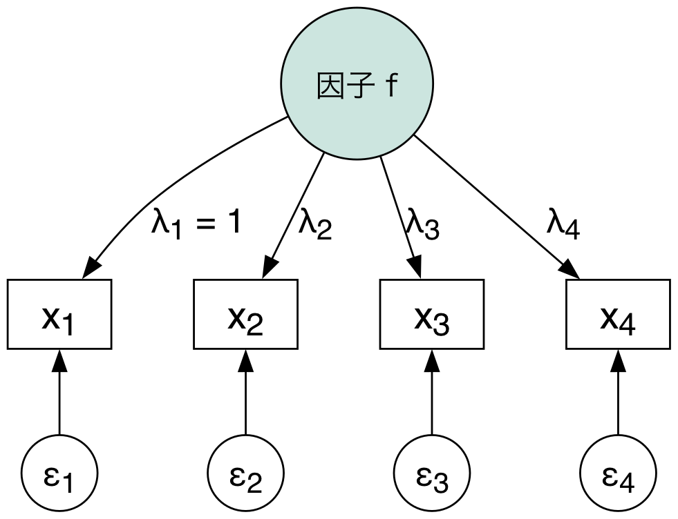

モデルが予言する共分散行列
SEM がモデルをデータとどう照らし合わせるのかを, 1 つの因子と 4 つの観測変数からなる小さなモデルで確かめます.

各観測変数は x_i = \lambda_i f + \varepsilon_i で, 因子の分散を \phi, 独自因子 \varepsilon_i の分散を \psi_i (プサイ) とします. 独自因子が互いに, また因子と無相関であることを使うと, 観測変数の分散と共分散は次のようにパラメータで表せます.
\begin{aligned} \mathrm{Var}(x_i) &= \lambda_i^2 \phi + \psi_i \\ \mathrm{Cov}(x_i, x_j) &= \mathrm{Cov}(\lambda_i f + \varepsilon_i,\ \lambda_j f + \varepsilon_j) = \lambda_i \lambda_j \phi \quad (i \neq j) \end{aligned}
パラメータの値を決めると, 観測変数の分散と共分散がすべて決まります. パラメータをまとめて \theta と書き, これらの分散と共分散を並べた行列を, モデルが予言する共分散行列 \Sigma(\theta) と呼びます. 対称行列なので, 下半分は省略します.
\Sigma(\theta) = \begin{pmatrix} \lambda_1^2\phi + \psi_1 & \lambda_1\lambda_2\phi & \lambda_1\lambda_3\phi & \lambda_1\lambda_4\phi \\ & \lambda_2^2\phi + \psi_2 & \lambda_2\lambda_3\phi & \lambda_2\lambda_4\phi \\ & & \lambda_3^2\phi + \psi_3 & \lambda_3\lambda_4\phi \\ & & & \lambda_4^2\phi + \psi_4 \end{pmatrix}
共分散がどのような構造を持つかをモデルで表し, データと比べることが, 共分散構造分析という名前の由来です.
パラメータに具体的な値を入れて \Sigma(\theta) を計算し, 同じモデルに従う仮想の回答者 1000 人のデータから計算した共分散行列と比べてみます.
import numpy as np
# 1 因子 4 指標のモデルのパラメータ
lam = np.array([1.0, 0.8, 0.6, 0.7]) # 因子負荷量 (1 つ目は 1 に固定)
phi = 0.5 # 因子の分散
psi = np.array([0.3, 0.4, 0.5, 0.4]) # 独自因子の分散
# モデルが予言する共分散行列
Sigma = phi * np.outer(lam, lam) + np.diag(psi)
print(Sigma.round(3))
"""
[[0.8 0.4 0.3 0.35 ]
[0.4 0.72 0.24 0.28 ]
[0.3 0.24 0.68 0.21 ]
[0.35 0.28 0.21 0.645]]
"""
# このモデルに従う仮想の回答者を 1000 人つくり, 共分散行列を計算する
rng = np.random.default_rng(0)
n = 1000
f = rng.normal(0, np.sqrt(phi), n) # 因子の値 (観測できない)
eps = rng.normal(0, np.sqrt(psi), (n, 4)) # 独自因子
X = f[:, None] * lam + eps # 観測される 4 項目
print(np.cov(X, rowvar=False).round(3))
"""
[[0.735 0.348 0.288 0.324]
[0.348 0.694 0.25 0.282]
[0.288 0.25 0.683 0.195]
[0.324 0.282 0.195 0.66 ]]
"""データから計算した共分散行列は, 標本のばらつきの分だけずれますが, モデルが予言した \Sigma(\theta) に近い値になります. SEM の推定はこの逆向きの計算です. データから共分散行列 S を計算し, \Sigma(\theta) が S にできるだけ近くなるパラメータ \theta を探します.
構造モデルのパス係数も, 同じように共分散の式に入ります. 例えば x = \lambda f + \varepsilon_x と y = \beta f + \varepsilon_y で, 誤差どうしと, 誤差と f が無相関なら,
\mathrm{Cov}(x, y) = \lambda \beta \phi
です. 因子負荷量 \lambda とパス係数 \beta が同じ \Sigma(\theta) の中に現れるので, 両方を 1 つの共分散行列から同時に推定できます.
このモデルは, 共分散の値の間に制約を課しています. 例えば \Sigma(\theta) の式から
\mathrm{Cov}(x_1, x_2)\,\mathrm{Cov}(x_3, x_4) = \mathrm{Cov}(x_1, x_3)\,\mathrm{Cov}(x_2, x_4) = \lambda_1\lambda_2\lambda_3\lambda_4\phi^2
が成り立ちます. 上の数値でも 0.4 \times 0.21 = 0.3 \times 0.28 = 0.084 です. データの共分散がこのような関係から大きく外れていれば, 「4 つの項目が 1 つの因子で説明できる」という仮説は疑わしくなります. モデルが共分散にこうした制約を課しているので, SEM はモデルがデータと矛盾するかどうかを検証できます.